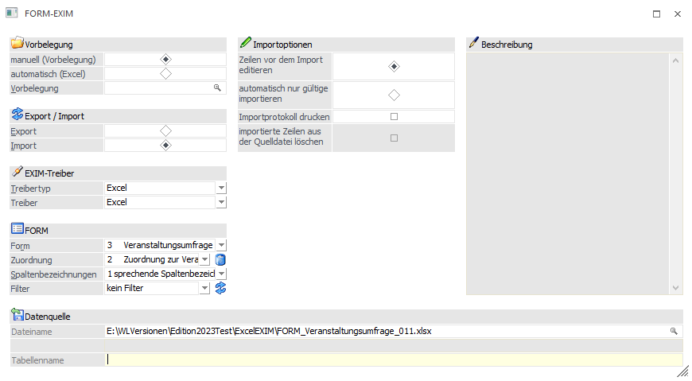
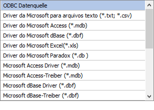
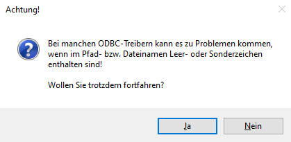
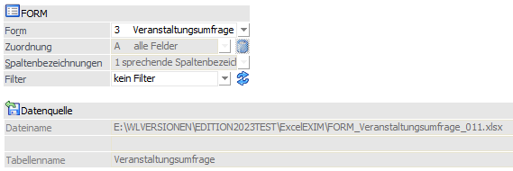

Über den Menüpunkt
1 WinLine INFO
1 SMART
1 FORM
1 FORM EXIM
kann das Fenster FORM-EXIM geöffnet werden.

Wurde zuvor ein Export via "automatisch (Excel)" durchgeführt, so wird die erstellte Datei geöffnet und parallel der Radiobutton bei "Export/Import" auf "Import" gesetzt, damit in Excel durchgeführte Änderungen sofort wieder importiert werden können. Zudem wird ein eventuell für den Export verwendeter Filter wieder zurückgesetzt und somit beim Import nicht verwendet. Genauso wird nach einem durchgeführten automatischen Import der Radiobutton wieder auf "Export" gesetzt.
Vorbelegung
Ø manuell (Vorbelegung)
Dieser Radiobutton ist nach Öffnen des Fensters im Standard bereits selektiert. So stehen zudem alle weiteren, für den Export relevanten Einstellungen und Eingabefelder zur Verfügung.
Ø automatisch (Excel)
Diese Vorbelegung bleibt selektiert, sofern zuvor auch ein automatischer Export stattgefunden hat.
Unabhängig davon bewirkt "automatisch", dass diverse Einstellungen im Fenster fix gesetzt und ausgegraut sind.
¨ Es kann keine Vorbelegung ausgewählt werden
¨ Ein Beschreibungstext erläutert die Funktion dieser Vorbelegung
¨ Unter "Datenquelle" wird automatisch ein Verzeichnispfad und Dateiname (in Abhängigkeit der selektierten FORM) vorgegeben
Ø Vorbelegung
In diesem Feld kann während eines manuellen Imports mit der Matchcode-Funktion (Taste F9, oder durch Anklicken der Lupe) nach einer bestehenden Vorlage gesucht werden, bzw. eine neue Bezeichnung für eine Vorlage eingegeben werden.
Export / Import
Die zur Verfügung stehenden Radiobuttons werden in Abhängigkeit der gewünschten Tätigkeit selektiert und wechseln nach einem automatischen Export direkt auf "Import".
EXIM-Treiber
Bei der Option "manuell (Vorbelegung)" können "Treibertyp" und "Treiber" gewählt werden.
Bei der Option "automatisch (Excel)" werden "Treibertyp" und "Treiber" mit "Excel" vorbelegt.
Ø Treibertyp
Bei der manuellen Vorbelegung kann in diesem Bereich gewählt werden, ob der Export über den Treibertyp "Excel", "XML" bzw. "ODBC" erfolgen soll. Die weiteren Einstellungen dazu erfolgen im Feld "Treiber".
Die automatische Vorbelegung setzt die Option "Excel".
Ø Treiber
Anders als bei der Vorbelegung "automatisch (Excel)" kann bei der Vorbelegung "manuell (Vorbelegung)" auswählt werden, welches Datenformat beim Import als Datenquelle herangezogen werden soll. Abhängig von der Einstellung im Feld "Treibertyp" sind die Auswahlmöglichkeiten unterschiedlich. Wurde als Treibertyp die Auswahl "Excel" gewählt, so steht als Treiber ebenfalls der Eintrag "Excel" zur Verfügung. Dieser Treiber und -typ entspricht (ohne Wahl einer Vorbelegung) zunächst dem Standard.
Für den Treibertyp "ODBC-Treiber" stehen alle ODBC-Treiber zur Auswahl, die im System installiert sind, so z. B.

Je nachdem, welcher Treiber gewählt wurde, wird die weitere Eingabe des Zielpfades und des Namens der Ausgabedatei bzw. Tabelle oder Datenbank gestaltet (Bereich "Exportziel").
Beispiel
Wird das Format "MS-Access Treiber (MDB)" gewählt, erfolgt die Aufforderung, den Pfad, den Datenbanknamen, sowie den Namen der Tabelle anzugeben, in welcher sich die Daten befinden. Wird z.B. das Format MS-SQL-Server gewählt, so muss der SQL-Servername, sowie der Datenbank- und Tabellenname eingetragen werden, etc..
Hinweise
Je nachdem, welche ODBC-Treiber verwendet werden, bzw. welche ODBC-Treiber-Version verwendet wird, kann es zu ungewünschten Verhalten des Exports/Imports kommen, wenn Sonderzeichen im Ziel- bzw. Verzeichnisnamen, oder im Datenbanknamen vorkommen. Aus diesem Grund wird (wenn solche Zeichen verwendet werden) eine Meldung ausgegeben:

FORM
Ø Form
Ermöglicht die Selektion der zur Verfügung stehenden WinLine FORMs und nimmt bei der automatischen Vorbelegung Einfluss auf den Dateinamen des Excel-Dokuments.
Ø Zuordnung
An dieser Stelle kann die Zuordnung der Felder der Importquelle zur bestehenden FORM geknüpft werden. Ist im Zusammenhang mit einer manuellen Vorbelegung bei der Verwendung des Treibertyps/Treibers "Excel" selektierbar. Auch die automatische Vorbelegung lässt hier keine Optionen zu.
ü A - alle Felder
Entspricht der
gesamten FORM-Definition.
ü N - neue Zuordnung
erstellen
Ermöglicht eine Zuordnung über das "EXIM - Zuordnungen
erstellen"-Fenster. Daraus kann die vorgenommene Zuordnung gespeichert (und
später erneut verwendet) bzw. optional temporär verwendet werden.
ü T - temporäre
Zuordnung
Steht temporär zur Auswahl, wenn nach einem Importvorgang mit neuer
Zuordnung kein Speichern der Zuordnung durchgeführt wurde.
Wurde eine Zuordnung gespeichert, so steht diese optional, in Kombination mit der verwendeten FORM, zur Verfügung.
Hinweis
Die Zuordnung wird im nachfolgenden Kapitel detailliert beschrieben.
Ø Spaltenbezeichnungen
Ist in Abhängigkeit der getätigten "Vorbelegung" ggf. ausgegraut. Es kann folgenden Varianten gewählt werden:
ü 0 numerische Spaltenbezeichnungen
ü 1 sprechende Spaltenbezeichnungen
ü 2 keine Spaltenbezeichnungen
Ø Filter
Optional können Filter angelegt und/oder bestehende Filter verwendet werden.
Hinweis
Es können nur die in der FORM enthaltenen Elemente als Bedingungen im Filter verwendet werden.
Datenquelle
Ø Datenquelle - automatisch (Excel)
Bei der Wahl eines automatischen Imports ist der gesamte Bereich ausgegraut. In Abhängigkeit der unter "FORM" selektierten Form bilden sich Dateiname und Tabellenname wie folgt:
ü Installationsverzeichnis der WinLine mit automatischer Angabe des Ordners "ExcelEXIM"
ü Information über Typ und verwendete Form
ü Information über den angemeldeten WinLine Benutzer inkl. der Dateiendung für das Excel-Format
ü Der Tabellenname innerhalb des Excel-Dokumentes bildet sich ebenso aus der selektierten Formbezeichnung
Beispiel

Hinweis
Leerzeichen innerhalb der Formbezeichnung werden durch einen Unterstrich "_" ersetzt. Weiterhin werden die o. a. zusammengesetzten Elemente (Typ, Formbezeichnung und Benutzer) durch einem Unterstrich getrennt. Jedes Eingabefeld kann bis zu 255 Zeichen beinhalten.
Ø Datenquelle - manuell (Vorbelegung)
In dem vorhandenen Eingabefeld kann entweder über eine direkte Eingabe, oder über das Lupen-Icon (altern. über die F9-Taste) der Weg zur Datenquelle angegeben werden.
In Abhängigkeit der zuvor selektierten EXIM-Treiber und der sich daraus ergebenen Kombination zwischen "ODBC" Treibertyp und passendem Treiber werden bei "Exportziel" Eingabefelder zur Eingabe freigegeben oder ausgegraut (und somit gesperrt).
Importoptionen
Ø Zeilen vor dem Import editieren
Ø automatisch nur gültige
Nach erfolgter Korrektur können auch diese importiert werden.
Ø Importprotokoll drucken
Optional kann auch ein Importprotokoll ausgegeben werden.
Ø importierte Daten aus der Quelldatei löschen
Durch das Setzen dieser Option werden bereits importierte Datensätze aus der Datenquelle gelöscht.
Hinweis
Diese Option steht nur bei einem manuellen Import via ODBC-Treibertyp und Treiber zur Verfügung. Wird diese Option verwendet, so wird der "mesokey" ("meso_key") zum Löschen herangezogen. Beim Löschen der Importdaten aus der Quelldatei bleiben für FORMs mit MESOKEY neue Einträge in der Importdatei erhalten (da diese beim Löschen nicht unterschieden werden können).